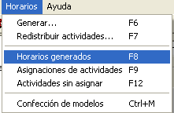
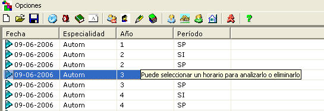
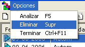

|
Horarios generados |
El sistema posibilita ver un listado de los horarios que han sido generados.

Cuando seleccione la opción en el menú horarios, aparecerá dicho listado.

Además habrá un conjunto de opciones que podrá realizar sobre ellos, como lo es:

Analizar un horario: Muestra la ventana de análisis de horarios
Eliminar un horario: Elimina todas las asignaciones que pertenecen a la Especialidad, Año y Período en cuestión, exceptuando las actividades fijas. Puede seleccionar varios horarios y eliminarlos.